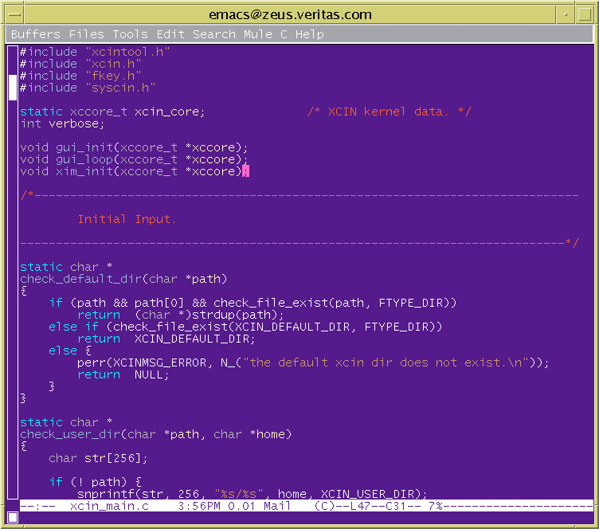
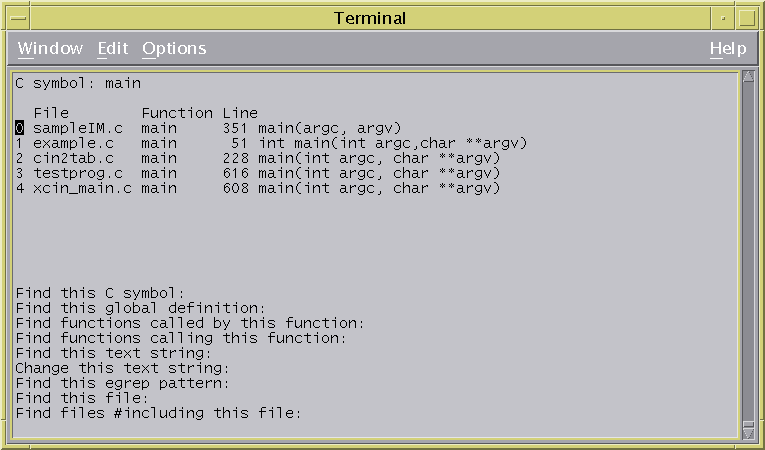

程式與編輯器
程式語言syntax的顏色
程式語言裡面有些保留字例如void,char。或者一些名字是函式名字，func() {。 emacs會根據內定的規則將顏色show出來，有時我們會打錯字，這時如果發現字 沒有顏色，就知道我們寫錯了，可以回去修正。單一程式的syntax 顏色請在 .emacs裡面加這一行，
(setq c-mode-hook 'turn-on-font-lock) |
或者
(if window-system (add-hook 'find-file-hooks 'turn-on-font-lock)) |
Figure 1-1. emacs的程式語法顏色

本來vi是沒有顏色，但如果用的是vim，可以下個
:syntax on |
syntax on |
Figure 1-2. vi的syntax顏色

indentation對齊
coding style裡面跟編輯器很大關係的應該是indentation了，這個就是如何將 你的程式碼的邏輯與層級表示出來的手法。例如
if (condition==ture) {
do_1;
do_2;
}
else {
while(condition == true) {
do_3;
do_4;
}
do_5;
}
|
這樣每行一層一層的表現手法有人認為應該統一規定，每次一個層級就是一 個TAB鍵，有人認為不一定，因為標準的TAB其實從螢幕上看起來是空了８格， 如果層級一多就不好看。但也有如Linux的首創者Linus就認為層級多，表示 程式邏輯不夠好，應該避免。不管如何，那是見仁見智的看法，要怎麼定， 看你們團隊的coding style是怎麼定的。emacs內定是按TAB鍵表示是一個 indent層級，但是它不再是真的TAB鍵，所以不會看起來空８格。當你換行後 ，按TAB鍵，emacs會自動把你的游標根據indent規則放過去。像C裡面的 while, if else, switch case,等等他都會自動幫你indent，非常方便。 程式它看起來是這樣的：
Figure 1-3. emacs程式對齊(indent)
如果你想要真的TAB以符合Linus的coding style，請把這個放到你的.emacs裡面
(defun linux-c-mode ()
"C mode with adjusted defaults for use with the Linux kernel."
(interactive)
(c-mode)
(setq c-indent-level 8)
(setq c-brace-imaginary-offset 0)
(setq c-brace-offset -8)
(setq c-argdecl-indent 8)
(setq c-label-offset -8)
(setq c-continued-statement-offset 8)
(setq indent-tabs-mode nil)
(setq tab-width 8))
|
linux-c-mode |
(setq auto-mode-alist
(append
(list
'("\\.h" . linux-c-mode)
'("\\.c" . linux-c-mode)
'("\\.cxx" . linux-c-mode)
'("\\.cpp" . linux-c-mode))
auto-mode-alist))
|
indent時，如果上下括號不對稱，你按tab鍵時就會發現有錯誤了。這時就可以回 去訂正。非常方便
VIM中也有autoindent可以給命令或在.vimrc
set cindent set autoindent |
C程式的游標移動
C語言中有些一塊一塊的組織，例如函式用{}括起來這塊叫sentence, 空白行隔開的叫paragraph. emacs中
M-{,M-} :往前往後跳一個空白行
|
{, } :往前往後跳一個空白行
(, ) :往前往後跳一個函式(sentence)
[[, ]] :往前往後跳一個section
|
追蹤程式碼Trace code
如果你有處理大型軟體，你就知道幾十萬行的code跳來跳去有些東西找起來很吃 力，放心，既然叫做程式師的編輯器，就不會少了程式碼搜尋的能力。 在emacs裡面有找tag這個東西就是用etags做出一個TAGS然後會記錄一些相關 變數的資訊，然後根據這些Symbol來找出要的程式在那個檔的那一行
在source code的最上層目錄
$ etags -d `find . -name "*.[ch]"` $ find . -name "*.[ch]" | xargs etags -a -d $ find . \(-name "*.[ch]"\) -o \(-name "*.cc"\) | xargs etags -a -d --c++ |
這是說從目前目錄開始找，找出.c 與.h .cc檔案，然後用pipe加上xargs，一個 一個餵給etags來產生有C++特性的TAGS檔。在游標處按下列按鍵會根據游標的所 在字串找。 -a 表示每次造出的tags要放到TAGS檔後面。
M-. :找一個TAG也就是symbol(就是一個變數或函式名) C-u M-. :繼續找，因為這個不是你想要的。 M-* :回去剛剛按尋找TAG的起始處。 |
vi的找tag要用ctags創造出一個tags然後紀錄相關變數的資訊在這個檔裡面。
$ ctags -d -t -w `find . -name "*.[ch]"` |
在vi內給這個命令
:ta symbol |
:pop |
csocpe提供一個vi愛好者更好的介面跟搜尋，在原始程式的最上層目錄下命令
$ cscope -R -q |
cscope.out Symbol交叉參考(cross-reference)檔 cscope.in.out 反向索引檔用來做快速Symbol cscope.po.out 反向索引檔 |
Figure 1-4. cscope展示

下次要再進入cscope如果有新的symbols，請用
$ cscope -R -q |
$ cscope -d |
如果要看kernel code可以加-k表示不找/usr/include下的header files. cscope可以在http://cscope.sourceforge.net/找到。 cscope有個cbroswer喔，非常的正點，可以在web上執行cscope的功能， 可以在cscope的網頁找到。
在RedHat的網頁上， http://sources.redhat.com/projects.html 還有一個IDE叫source-navigator也相當不錯。